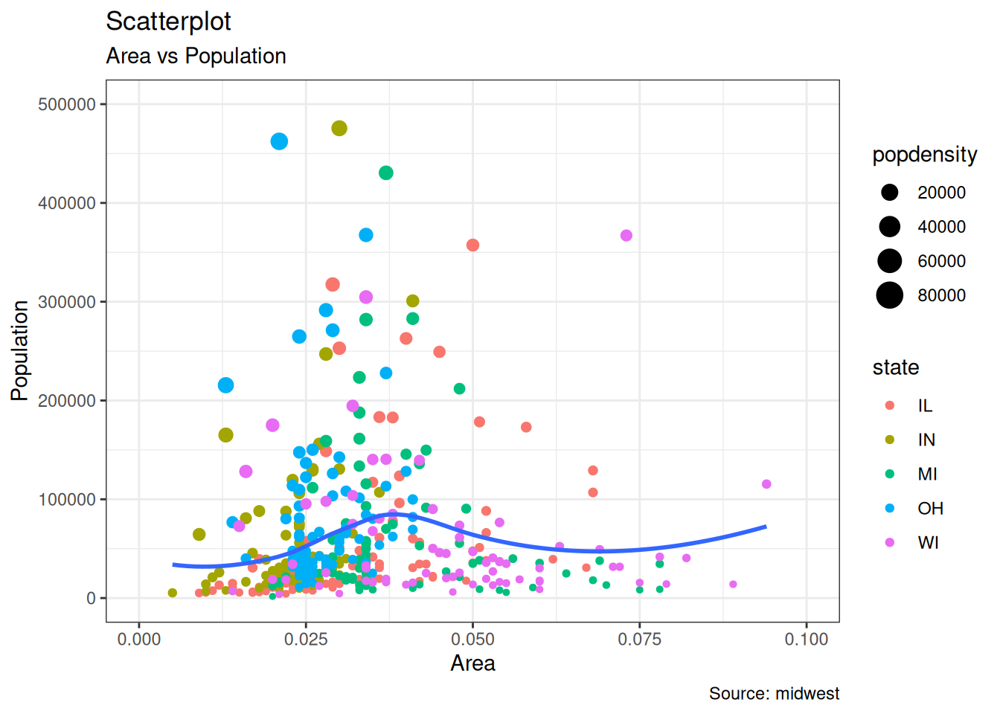
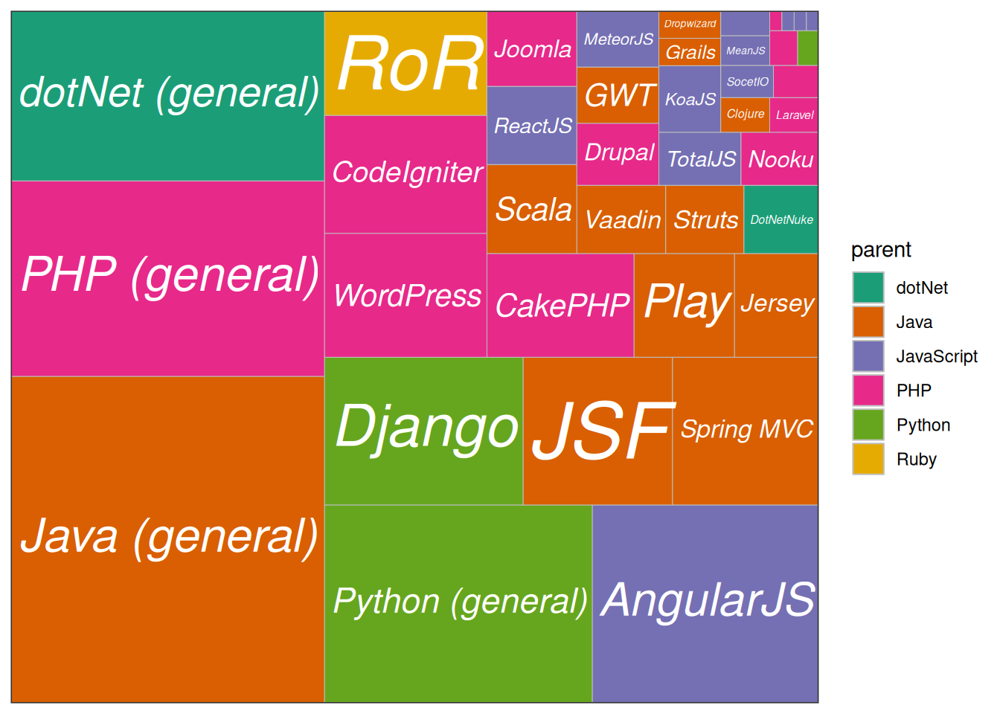
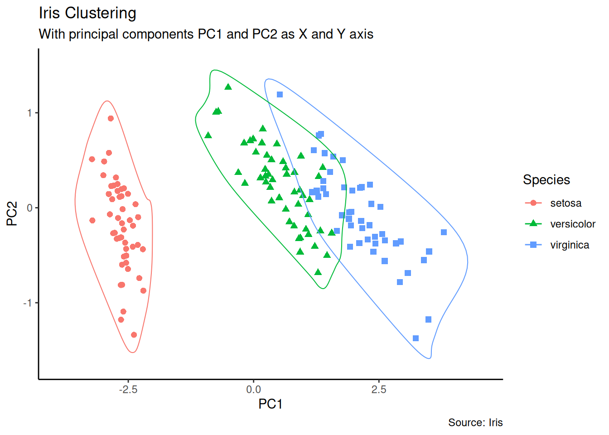

6 Top 50 ggplot2 可视化
该文章来自 r-statistics.co
翻译参考了知乎-数据分析、特征工程的可视化
英文原版 For original version in English: Top 50 ggplot2 Visualizations (Chapter 5)
一个好的图形包含以下要素:
- 传达正确信息，不扭曲事实。
- 简洁而优雅，理解它不应需要太多思考。
- 符合美学要求，但不应过分追求导致必要信息缺失。
- 信息量不过载。
下面的示例可以根据可视化的目标分为8类图表。在实际绘制之前，你应该弄清楚你想通过数据可视化来传达或研究哪些发现和关系，它很有可能属于这8个类别中的一个或多个。
文章中用到的R包:
6.1 相关 Correlation
下面的图形帮助解释两个变量之间的相关性。
6.1.1 点图 Scatterplot
最常使用的数据分析图无疑是散点图。每当您想了解两个变量之间的关系时，第一个选择就是散点图。
theme_set(theme_bw())
options(scipen = 999) # 关闭科学计数显示
ggplot(midwest, aes(x = area, y = poptotal)) +
geom_point(aes(color = state, size = popdensity)) +
geom_smooth(method = "loess", se = FALSE) +
xlim(c(0, 0.1)) +
ylim(c(0, 500000)) +
labs(
x = "Area",
y = "Population",
title = "Scatterplot",
subtitle = "Area vs Population",
caption = "Source: midwest"
)
6.1.2 有圈点图 Scatterplot With Encircling
在展示结果时，有时会在图表中强调某些特殊点组成的区域，以引起人们对这些特殊情况的注意。使用 ggalt 软件包中的geom_encircle()可以很方便地做到这一点。
midwest_select <- midwest[
midwest$poptotal > 350000 &
midwest$poptotal <= 500000 &
midwest$area > 0.01 &
midwest$area < 0.1,
]
# Plot
ggplot(midwest, aes(x = area, y = poptotal)) +
geom_point(aes(col = state, size = popdensity)) + # draw points
geom_smooth(method = "loess", se = F) +
xlim(c(0, 0.1)) +
ylim(c(0, 500000)) + # draw smoothing line
geom_encircle(aes(x = area, y = poptotal),
data = midwest_select,
color = "red",
size = 2,
expand = 0.08
) + # encircle
labs(
subtitle = "Area Vs Population",
y = "Population",
x = "Area",
title = "Scatterplot + Encircle",
caption = "Source: midwest"
)
6.1.3 计数图 Counts Chart
当数据点重叠时，散点图可能无法清楚地显示数据，因此可以使用计数图。在计数图中，数据点重叠越多的地方会显示一更大的圆。
ggplot(mpg, aes(cty, hwy)) +
geom_count(aes(colour = "tomato3"), show.legend = FALSE) +
labs(
subtitle = "mpg: city vs highway mileage",
y = "hwy",
x = "cty",
title = "Counts Plot"
)
6.1.4 气泡图 Bubble plot
散点图可以比较两个连续变量之间的关系，而气泡图则可以很好地帮助理解一个分类变量（通过改变颜色）和另一个连续变量（通过改变点的大小）的基础组内关系。简单地说，如果您有四维数据，其中两个是 X 和 Y（连续变量），另两个是表示颜色（分类变量）和大小（连续变量）的变量，那么气泡图就比较适合。
气泡图可以清楚地区分不同制造商之间的displ范围以及最佳拟合直线斜率的变化情况，从而更好地对各组数据进行直观比较。
mpg_select <- mpg[mpg$manufacturer %in% c("audi", "ford", "honda", "hyundai"), ]
ggplot(mpg_select, aes(displ, cty)) +
geom_jitter(aes(col = manufacturer, size = hwy)) +
geom_smooth(aes(col = manufacturer), method = "lm", se = FALSE) +
labs(
subtitle = "mpg: Displacement vs City Mileage",
title = "Bubble chart"
)
6.1.5 边际直方图 Marginal Histogram / Boxplot
如果想在同一张图表中显示关系和分布，可以使用边际直方图。它在散点图的边缘显示 X 和 Y 变量的直方图。
可以使用 ggExtra 软件包中的 ggMarginal() 函数来实现。除了直方图，您还可以通过设置相应的类型选项来绘制边际盒状图或密度图。
# mpg_select <- mpg[mpg$hwy >= 35 & mpg$cty > 27, ]
g <- ggplot(mpg, aes(cty, hwy)) +
geom_count() +
geom_smooth(method = "lm", se = FALSE)
ggMarginal(g, type = "histogram", fill = "transparent")
6.2 偏差 Deviation
比较少量项目（或类别）之间相对于固定参照物的数值变化。
6.2.1 发散型条形图 Diverging bars
发散条形图是一种可以处理负值和正值的条形图。可以通过对 geom_bar()进行巧妙的调整来实现。但是，“geom_bar()”的用法可能相当令人困惑。这是因为它既可以用来制作柱状图，也可以用来制作直方图。让我来解释一下。
默认情况下，geom_bar() 的统计量为计数。这意味着，当你只提供一个连续的 X 变量（而没有 Y 变量）时，它会尝试将数据制成柱状图。为了让条形图创建条形而不是直方图，需要做两件事。
在 “aes()”中设置 “stat=identity”，同时提供 x 和 y，其中 x 是字符或因子，y 是数字。为了确保得到的是发散条形图而不是单纯的条形图，请确保您的分类变量有两个类别，其值在连续变量的某个阈值时会发生变化。在下面的示例中，mtcars 数据集中的 mpg 通过计算 z 分数进行归一化。mpg高于零的车辆标记为绿色，低于零的标记为红色。
mtcars_new <- mtcars |>
mutate(
car_name = factor(rownames(mtcars)),
mpg_z = round((mpg - mean(mpg)) / sd(mpg), 2), # compute normalized mpg
mpg_type = ifelse(mpg_z < 0, "below", "above")
) |> # above / below avg flag
arrange(mpg_z) |>
as_tibble()
# Diverging Barcharts
ggplot(mtcars_new, aes(x = car_name, y = mpg_z, label = mpg_z)) +
geom_bar(stat = "identity", aes(fill = mpg_type), width = 0.5) +
scale_fill_manual(
name = "Mileage",
labels = c("Above Average", "Below Average"),
values = c("above" = "#00ba38", "below" = "#f8766d")
) +
labs(
subtitle = "Normalised mileage from 'mtcars'",
title = "Diverging Bars"
) +
# using sorted car_name to adjust the rank of the x labels
scale_x_discrete(limits = mtcars_new$car_name) +
coord_flip()
6.2.2 发散型棒棒糖图 Diverging Lollipop Chart
棒棒糖图传达的信息与柱状图和发散柱状图相同。只不过它看起来更现代。我没有使用 geom_bar()，而是使用了 geom_point() 和 geom_segment() 来正确绘制棒棒糖图。让我们用上一个发散条形图示例中的相同数据来画一个棒棒糖图。
ggplot(mtcars_new, aes(x = car_name, y = mpg_z, label = mpg_z)) +
geom_point(stat = "identity", fill = "black", size = 6) +
# geom_segment draw a line between
# (x,y) and (xend,yend)
geom_segment(aes(
y = 0, x = car_name,
yend = mpg_z, xend = car_name
), color = "black") +
# label mpg_z -> geom_text
geom_text(color = "white", size = 2) +
labs(
title = "Diverging Lollipop Chart",
subtitle = "Normalized mileage from 'mtcars': Lollipop"
) +
ylim(-2.5, 2.5) +
scale_x_discrete(limits = mtcars_new$car_name) +
coord_flip()
6.2.3 发散型点图 Diverging Dot Plot
点图也能传递类似的信息。其原理与我们在发散条形图中看到的相同，只是只使用了点。下面的示例使用了发散条形图示例中的相同数据。
ggplot(mtcars_new, aes(x = car_name, y = mpg_z, label = mpg_z)) +
geom_point(stat = "identity", aes(color = mpg_type), size = 6) +
scale_color_manual(
name = "Mileage",
labels = c("Above Average", "Below Average"),
values = c("above" = "#00ba38", "below" = "#f8766d")
) +
geom_text(color = "white", size = 2) +
labs(
title = "Diverging Dot Plot",
subtitle = "Normalized mileage from 'mtcars': Dot plot"
) +
scale_x_discrete(limits = mtcars_new$car_name) +
coord_flip()
6.3 排序 Ranking
用于比较多个变量之间的的排位。在排序中，变量实际值的重要性会显得没有他们的排位重要。
6.3.1 点图 Dot Plot
点图与棒棒糖图非常相似，但没有线段，且翻转到水平位置。它更强调变量实际值的排序，以及不同变量与起始位置之间的距离。
# Prepare data: group mean city mileage by manufacturer.
cty_mpg <- mpg |>
group_by(manufacturer) |>
summarise(mileage = mean(cty, na.rm = TRUE)) |>
rename(make = manufacturer) |>
mutate(make = factor(make, levels = make)) |>
arrange(mileage)
ggplot(cty_mpg, aes(x = make, y = mileage)) +
geom_point(color = "tomato2", size = 3) +
geom_segment(
aes(
x = make, y = min(mileage),
xend = make, yend = max(mileage)
),
linetype = "dashed", linewidth = 0.1
) +
labs(
title = "Dot Plot",
subtitle = "Make Vs Avg. Mileage",
caption = "source: mpg"
) +
scale_x_discrete(limits = cty_mpg$make) +
coord_flip()
6.3.2 坡度图 Slope Chart
坡度图提供了比较两点在不同时间上的位置的极佳方法。目前，还没有内置函数来构建这种图表。下面的代码可作为您如何处理这一问题的指南。
# Prepare data
df <- read_csv("data/top50ggplot2/gdppercap.csv")
left_label <- paste(df$continent, round(df$`1952`), sep = ",")
right_label <- paste(df$continent, round(df$`1957`), sep = ",")
df$class <- ifelse(df$`1957` - df$`1952` < 0, "red", "green")
# Plot
ggplot(df) +
geom_segment(aes(x = 1, y = `1952`, xend = 2, yend = `1957`, color = class),
linewidth = 0.75, show.legend = FALSE
) +
geom_vline(xintercept = 1, linetype = "dashed", linewidth = 0.1) +
geom_vline(xintercept = 2, linetype = "dashed", linewidth = 0.1) +
scale_color_manual(
labels = c("Up", "Down"),
values = c("green" = "#00ba38", "red" = "#f8766d")
) +
labs(x = "", y = "Mean GdpPerCap") +
xlim(0.5, 2.5) +
ylim(0, (1.1 * max(df$`1957`, df$`1952`))) +
geom_text(
label = left_label, y = df$`1952`,
x = rep(1, nrow(df)), hjust = 1.1, size = 3.5
) +
geom_text(
label = right_label, y = df$`1957`,
x = rep(2, nrow(df)), hjust = -0.1, size = 3.5
) +
geom_text(
label = "Time 1", x = 1,
y = 1.1 * max(df$`1957`, df$`1952`),
hjust = 1.2, size = 5
) +
geom_text(
label = "Time 2", x = 2,
y = 1.1 * max(df$`1957`, df$`1952`),
hjust = -0.2, size = 5
) +
theme_classic() +
theme(
panel.background = element_blank(),
panel.grid = element_blank(),
axis.ticks = element_blank(),
axis.text.x = element_blank(),
panel.border = element_blank(),
plot.margin = unit(c(1, 2, 1, 2), "cm")
)
6.3.3 哑铃图 Dumbbell Plot
哑铃图是一个针对以下问题的很好的数据可视化工具：
- 直观显示两个时间点之间的相对位置（如增长和下降）。
- 比较两个类别变量之间的距离。
为了获得正确的哑铃图排序，Y 变量应该是一个因子类型的数据，因子变量的水平应该与它在图中出现的顺序相同。
# Prepare data
health <- read.csv("data/top50ggplot2/health.csv")
health$Area <- factor(health$Area,
levels = as.character(health$Area)
)
# Plot
ggplot(health, aes(x = pct_2013, xend = pct_2014, y = Area, group = Area)) +
geom_dumbbell(
color = "#a3c4dc", size = 0.75,
colour_x = "#0e668b"
) +
scale_x_continuous(labels = scales::percent) +
labs(
x = NULL,
y = NULL,
title = "Dumbbell Chart",
subtitle = "Pct Change: 2013 vs 2014",
caption = "Source: https://github.com/hrbrmstr/ggalt"
) +
theme_classic() +
theme(
plot.title = element_text(hjust = 0.5, face = "bold"),
plot.background = element_rect(fill = "#f7f7f7"),
panel.background = element_rect(fill = "#f7f7f7"),
panel.grid.minor = element_blank(),
panel.grid.major.y = element_blank(),
panel.grid.major.x = element_line(colour = "grey50"),
axis.ticks = element_blank(),
legend.position = "top",
panel.border = element_blank()
)
6.4 分布 Distribution
当你有大量的数据点，并且想研究数据点在哪里以及如何分布时。
6.4.1 Tufte Boxplot
由 ggthemes 软件包提供的 Tufte 方框图灵感来自 Edward Tufte 的作品。Tufte 的盒状图只是一个盒状图，它的设计简约而具有视觉吸引力。
ggplot(mpg, aes(manufacturer, cty)) +
geom_tufteboxplot() +
theme_tufte() + # from ggthemes
theme(axis.text.x = element_text(angle = 65, vjust = 0.6)) +
labs(
title = "Tufte Styled Boxplot",
subtitle = "City Mileage grouped by Class of vehicle",
caption = "Source: mpg",
x = "Class of Vehicle",
y = "City Mileage"
)
6.4.2 人口金字塔 Population Pyramid
人口金字塔提供了一种独特的方式，可以直观地显示有多少人口或多大比例的人口属于某个类别。下面的金字塔就是一个很好的例子，说明在电子邮件营销活动中的每个阶段有多少用户被留住。
options(scipen = 999)
email_campaign_funnel <- read.csv("data/top50ggplot2/email_campaign_funnel.csv")
# X Axis Breaks and Labels
brks <- seq(-15000000, 15000000, 5000000)
lbls <- paste0(as.character(c(seq(15, 0, -5), seq(5, 15, 5))), "m")
ggplot(
email_campaign_funnel,
aes(x = Stage, y = Users, fill = Gender)
) + # Fill column
geom_bar(stat = "identity", width = 0.6) + # draw the bars
scale_y_continuous(
breaks = brks, # Breaks
labels = lbls
) + # Labels
coord_flip() + # Flip axes
labs(title = "Email Campaign Funnel") +
theme_tufte() + # Tufte theme from ggfortify
theme(
plot.title = element_text(hjust = 0.5),
axis.ticks = element_blank()
) + # Centre plot title
scale_fill_brewer(palette = "Dark2") # Color palette
6.5 组成 Composition
6.5.1 华夫图 Waffle Chart
华夫图是显示总人口分类组成的一种好方法。虽然没有直接的函数，但可以通过使用 geom_tile() 函数巧妙地操纵 ggplot2 来实现。下面的模板可以帮助你创建自己的华夫图。
var <- mpg$class
df <- expand.grid(y = 1:10, x = 1:10)
categ_table <- round(table(var) * ((10 * 10) / (length(var))))
df$category <- factor(rep(names(categ_table), categ_table))
ggplot(df, aes(x = x, y = y, fill = category)) +
geom_tile(color = "black", linewidth = 0.5) +
scale_x_continuous(expand = c(0, 0)) +
scale_y_continuous(expand = c(0, 0), trans = "reverse") +
scale_fill_brewer(palette = "Set2") +
labs(
title = "Waffle Chart", subtitle = "'Class' of vehicles",
caption = "Source: mpg"
) +
theme(
plot.title = element_text(size = rel(1.2)),
axis.text = element_blank(),
axis.title = element_blank(),
axis.ticks = element_blank(),
legend.title = element_blank(),
legend.position = "right"
)
6.5.2 树形图 Treemap
树形图是一种通过嵌套矩形显示分层数据的好方法。treemapify 软件包提供了将数据转换为所需格式（treemapify）以及绘制实际图形（ggplotify）的必要函数。
要创建树形图，必须使用 treemapify() 将数据转换为所需格式。您的数据必须分别包含一个变量，用于描述瓦片的面积、填充颜色、瓦片标签以及父组。
数据格式化完成后，只需在树状地图数据上调用 ggplotify()。
proglangs <- read.csv("data/top50ggplot2/proglanguages.csv")
ggplot(proglangs, aes(
area = value,
fill = parent, group = parent, label = id
)) +
geom_treemap() +
geom_treemap_text(
fontface = "italic", colour = "white", place = "centre",
grow = TRUE
) +
scale_x_continuous(expand = c(0, 0)) +
scale_y_continuous(expand = c(0, 0)) +
scale_fill_brewer(palette = "Dark2")
6.6 分组 Groups
6.6.1 分层树枝图 Hierarchical Dendrogram
theme_set(theme_bw())
hc <- hclust(dist(USArrests), "ave") # hierarchical clustering
# plot
ggdendrogram(hc, rotate = TRUE, size = 2)
6.6.2 聚类 Clusters
可以使用 geom_encircle()来显示不同的聚类或分组。如果数据集具有多个弱特征，可以计算主成分，并以 PC1 和 PC2 为 X 轴和 Y 轴绘制散点图。
theme_set(theme_classic())
# Compute data with principal components ------------------
df <- iris[c(1, 2, 3, 4)]
pca_mod <- prcomp(df) # compute principal components
# Data frame of principal components ----------------------
df_pc <- data.frame(pca_mod$x,
Species = iris$Species
) # dataframe of principal components
df_pc_vir <- df_pc[df_pc$Species == "virginica", ] # df for 'virginica'
df_pc_set <- df_pc[df_pc$Species == "setosa", ] # df for 'setosa'
df_pc_ver <- df_pc[df_pc$Species == "versicolor", ] # df for 'versicolor'
# Plot ----------------------------------------------------
ggplot(df_pc, aes(PC1, PC2, col = Species)) +
geom_point(aes(shape = Species), size = 2) + # draw points
labs(
title = "Iris Clustering",
subtitle = "With principal components PC1 and PC2 as X and Y axis",
caption = "Source: Iris"
) +
coord_cartesian(
xlim = 1.2 * c(min(df_pc$PC1), max(df_pc$PC1)),
ylim = 1.2 * c(min(df_pc$PC2), max(df_pc$PC2))
) + # change axis limits
geom_encircle(data = df_pc_vir, aes(x = PC1, y = PC2)) + # draw circles
geom_encircle(data = df_pc_set, aes(x = PC1, y = PC2)) +
geom_encircle(data = df_pc_ver, aes(x = PC1, y = PC2))